Llegué a Santiago provinciano y Martín Rivas...
Manuel García · La gran ciudad
I came to Santiago as an outsider like Martín Rivas...
Plaza de la Ciudadanía / Bandera Bicentenario Santiago Centro 33.4438° S, 70.6538° W
Dicen que el tiempo guarda en sus bastillas las cosas que el hombre olvidó...
They say time keeps within its hems the things manking forgot...
Fernando Ubiergo · El tiempo en las bastillas
Patio de los Naranjos, La Moneda Santiago Centro 33.4430° S, 70.6539° W
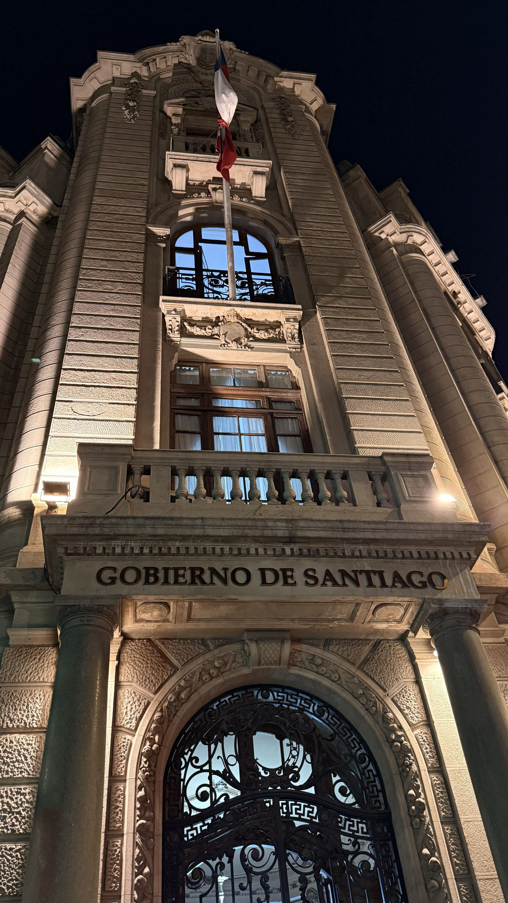
Quién me ayudaría a desarmar tu historia antigua, y a pedazos volverte a conquistar...
Who would help me take apart your ancient past, and piece by piece win you back again...
Santiago del Nuevo Extremo · A mi ciudad
Edificio de la ex-Intendencia de Santiago (Morandé con Moneda) Santiago Centro 33.4422° S, 70.6532° W
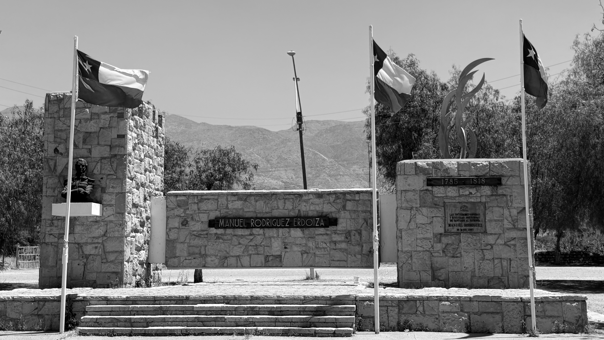
Yo no sé si volveré a verlo libre y gentil; solo sé que sonreía camino a Til-Til.
I don't know if I'll see him free and noble once more; all I know is that he went with a smile on his way to Til-Til.
Patricio Manns · El cautivo de Til-Til
Monumento a Manuel Rodríguez (Camino a Til-Til) Til-Til 33.1153° S, 70.9269° W
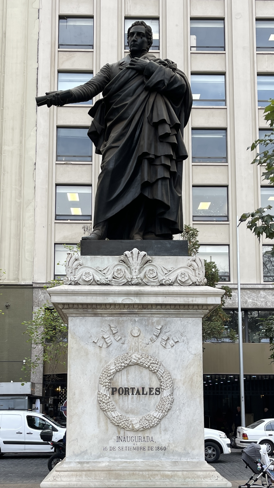
Santiago del ochocientos, para poderte mirar...
19th century Santiago, if I could look upon you...
Violeta Parra · Santiago, penando estás
Estatua de Diego Portales, Plaza de la Constitución (Agustinas) Santiago Centro 33.4413° S, 70.6541° W
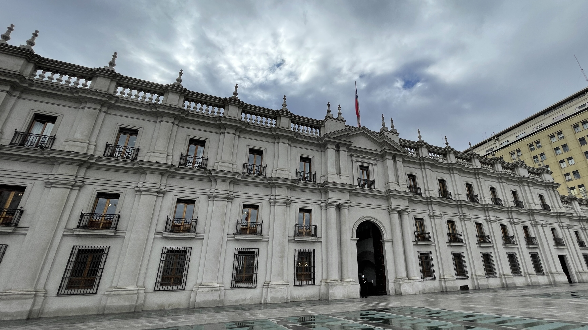
Y en una hermosa plaza liberada...
And in a beautiful liberated plaza...
Pablo Milanés · Yo pisaré las calles nuevamente
La Moneda Santiago Centro 33.4436° S, 70.6539° W
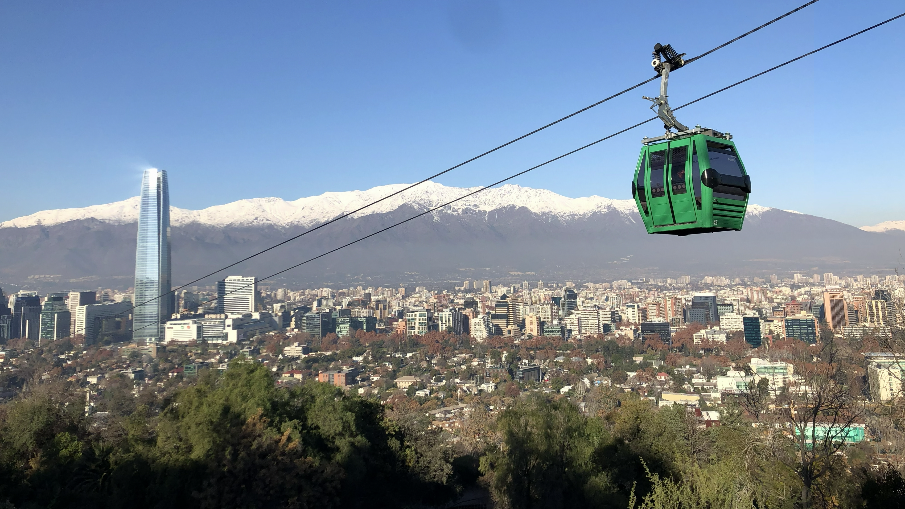
Y si miras de lo alto hacia el valle, lo verás que lo baña un estero...
Los Huasos Quincheros · Si vas para Chile
And if you look from on high towards the valley, you'll see that it's bathed by a river...
Plaza Tupahue (Parquemet), mirando hacia Pedro de Valdivia Norte (Providencia) Providencia 33.4159° S, 70.6219° W
Ya la aurora no es nada nuevo...
Dawn holds no novelty now...
Eduardo Gatti · Los momentos
Torres EMPART (UVP), Av. Providencia con Carlos Antúnez Providencia 33.4270° S, 70.6153° W
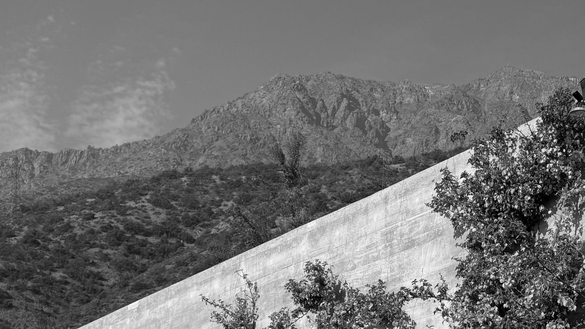
Mira hacia el cielo y olvida ese lánguido temor que fue permanente emoción
Gaze at the sky and let go of the languid dread that lived as an endless thrill
Los Jaivas · Mira Niñita
Templo Bahai Peñalolén 33.4766° S, 70.5118° W
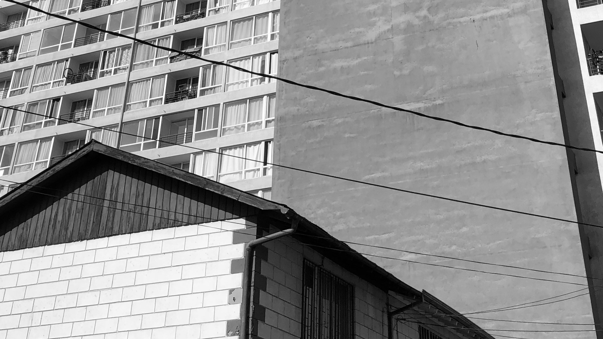
Bajo el rostro nuevo del cemento, vive el mismo pueblo de hace tiempo...
Beneath the new face of concrete, the same folk endure...
Illapu · Vuelvo
Av. María Rozas Velásquez con calle Pudahuel (zona 'guetos verticales') Estación Central 33.4531° S, 70.7060° W
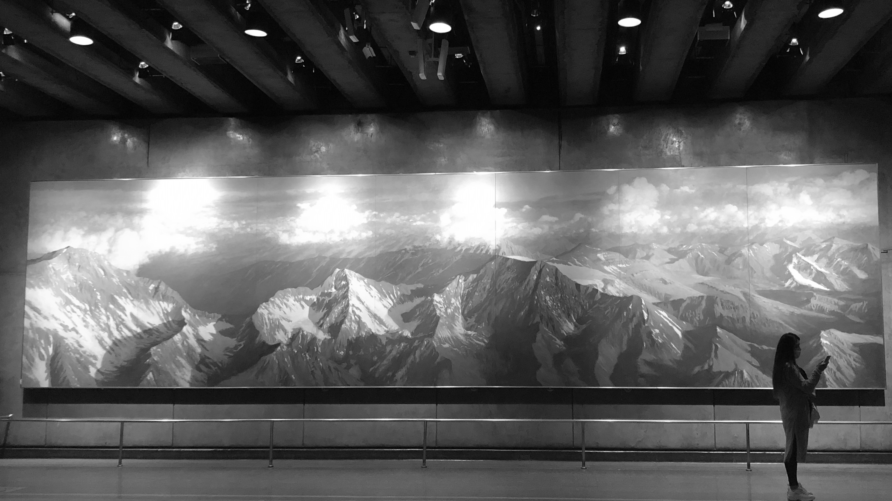
De este viaje, por nuestra historia, por los conceptos...
Schwenke & Nilo · El viaje
Estación La Moneda Santiago Centro 33.4450° S, 70.6555° W
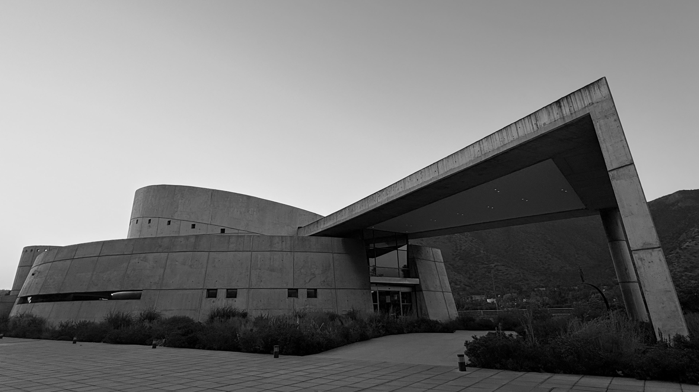
Una preciosa entrada de autos esperando un Peugeot.
Víctor Jara · Las casitas del barrio alto
Youtopia (Av. Monseñor Escrivá de Balaguer) Vitacura 33.3824° S, 70.5823° W
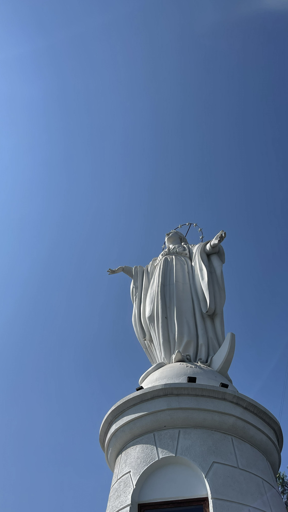
Levántate, y mira la montaña; de donde viene el viento, el sol y el agua..
Víctor Jara · Plegaria a un labrador
Cerro San Cristóbal Providencia 33.4254° S, 70.6332° W
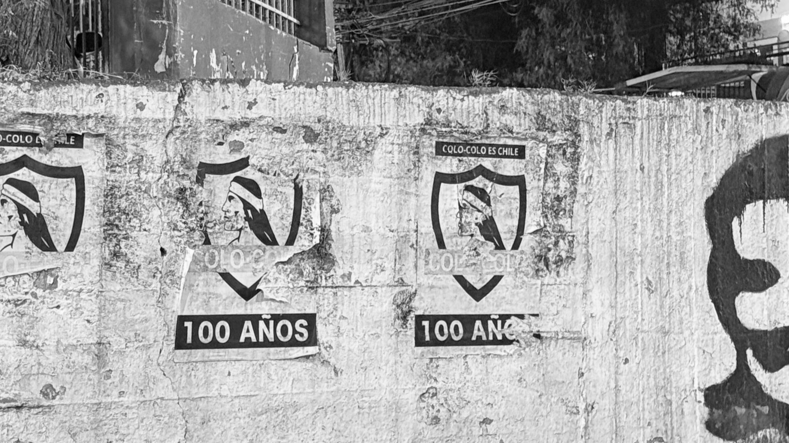
De la población, poca plata, mucho amor y sobra el corazón.
Arte Elegante · Nos Jugamos La Vida
Pobl. José María Caro ('La Caro') Lo Espejo 33.5059° S, 70.6848° W
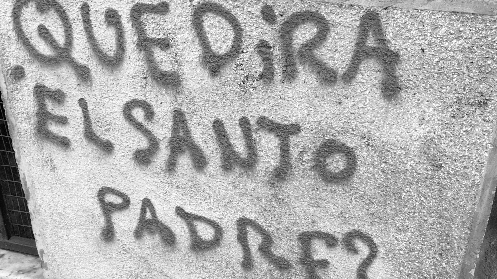
Miren cómo nos hablan del paraíso...
Violeta Parra · ¿Qué dirá el Santo Padre?
Cerro Santa Lucía Santiago Centro 33.4384° S, 70.6431° W
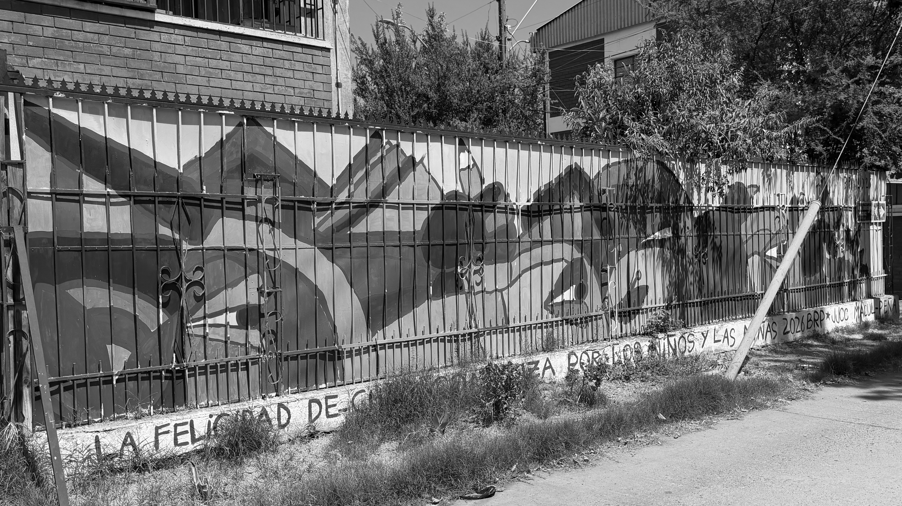
Frágil como un volantín, en los techos de Barrancas jugaba el niño Luchín con sus manitos moradas
Víctor Jara · Luchín
Villa Universidad Católica (Ramón Cruz Montt con Capitán Ignacio Carrera Pinto) Macul 33.4805° S, 70.5828° W
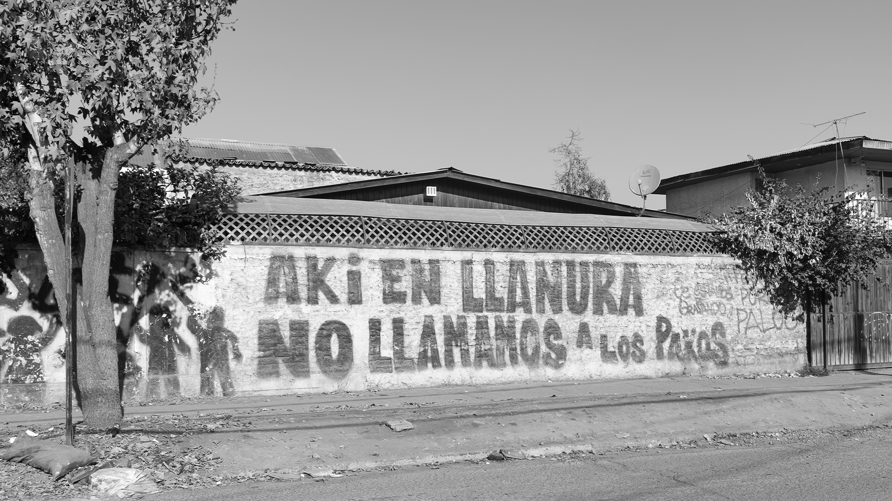
El bajo Chile anónimo.
Portavoz · El otro Chile
Llanura con Coronel Alejandro Sepúlveda Peñalolén 33.4737° S, 70.5670° W
Cantemos todos de Arica a Magallanes...
Carlos Ulloa Díaz / Mario Barrientos · Himno de Colo Colo
Estadio Monumental Macul 33.5063° S, 70.6052° W
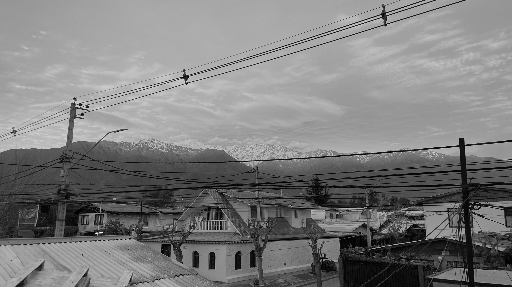
Cuando me acuerdo de mi país...
Patricio Manns · Cuando me acuerdo de mi país
Lo Hermida Peñalolén 33.4747° S, 70.5690° W
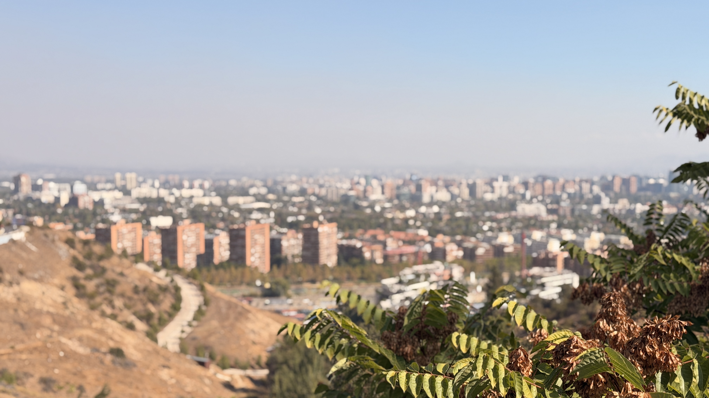
Quisiera sacarte a caminar en un largo tour por Pudahuel y La Bandera, por Pudahuel y por La Legua; y verías la vida tal como es...
Sol y Lluvia · El largo tour
Entrada a La Dehesa (Gran Vía con Camino Santa Teresa de Los Andes) Lo Barnechea 33.3676° S, 70.5456° W
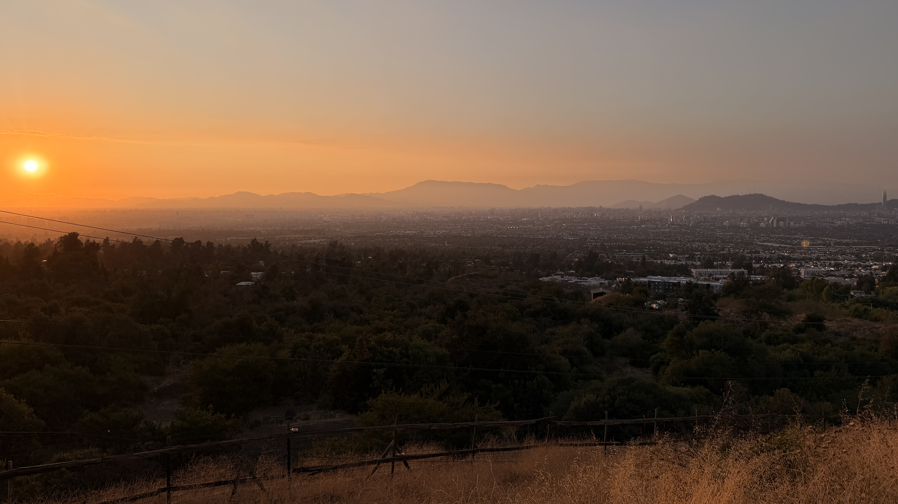
Y en Santiago tantas cosas...
Ismael Serrano · Vine del Norte
Mirador de Peñalolén Alto Peñalolén 33.4886° S, 70.5199° W
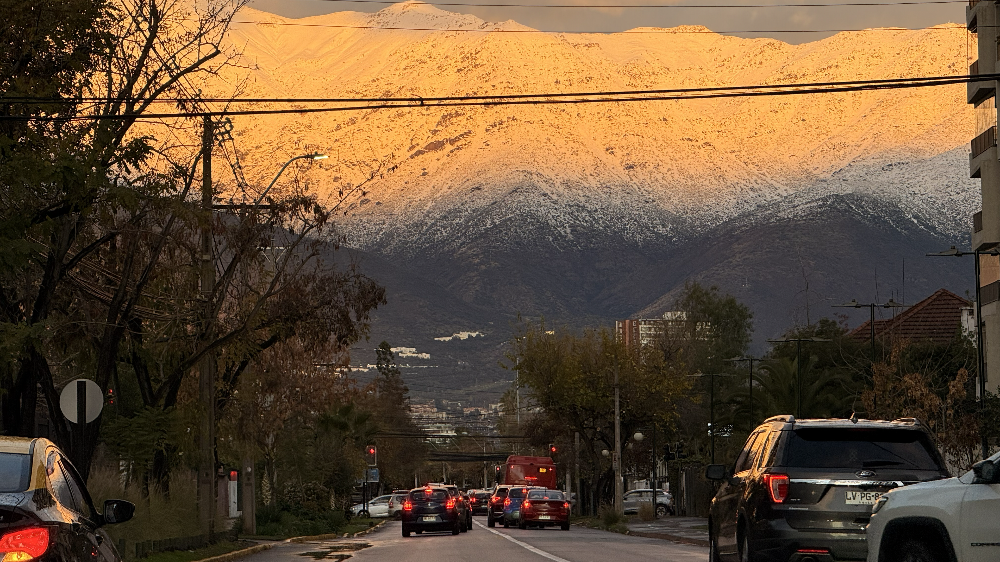
¿Qué sabes de cordillera si tú naciste tan lejos?
Patricio Manns · Arriba en la Cordillera